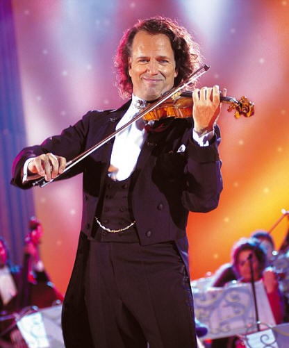

UPDATED: Listen to the interview with Andr� on Sunday
May
19
- 2010
Write/View comments
(0) -
Email to a friend
- Jump to top
If you missed the hour of talkback about Andr� on the Real Life show on Newstalk ZB, or maybe you just want to listen to it again, I've uploaded the whole show to a file sharing website.
I've also quickly written the times of events within the show, in case you didn't want to listen to everything, which is included below in this post.
So click here to go to the website and start listening from the beginning now. - You'll notice that if you want to adjust the time slider, it's a bit fidgety, sorry about that! - That's because I'm using a free service.
Or alternatively,
if you'd like to have the original .mp3 recording on
your computer, you can download it
here (link is not up yet, check back in
a few hours). This way you can jump to
different time points more easily, using your
computers music player.
0:00 Weather
2:15 Initial opening of show
6:37 First Ad Break
8:07 Programme resumes
9:20 Interview with Andr� begins
18:49 Second Ad Break
20:19 Programme resumes with second half of the
interview
28:03 Interview finishes (introduces me! :P)
29:43 Third Ad Break
31:48 Programme resumes
32:35 I�m on!
35:10 I�m off! Other callers call in.
48:43 Fourth Ad Break
50:12 Programme resumes
54:58 Programme finishes � Advertising begins.
UPDATED 8:55PM 19/05/10: Link to download the .mp3 file is now included.
And once again, thanks to Carol from Ashburton, for letting me know of the interview!
ATTENTION: Andr� on Newstalk ZB Radio this
Sunday!
May
14
- 2010
Write/View comments
(0) -
Email to a friend
- Jump to top
This is an exciting piece of news, so read on! - The following information is from the post on the NZ fan Facebook page:
|
ATTENTION all Andr� Rieu fans!!! Andr� interview and talkback this Sunday night on Newstalk ZB... We're dedicating our entire radio programme on Newstalk ZB this Sunday night to Andr� and his amazing music... we're kicking it off with a phone interview with Andr� himself and then we'd love to have some big kiwi fans ...calling up the show. Here's what you need to do:
Following the link below, you can click on 'frequencies' to find what to tune your radio to so that you can catch the show. You can also listen on-line at newstalkzb.co.nz. If anyone has a great story to tell, and you want to be sure to tell it on air, simply email me with your phone number at josh@cba.org.nz and we'll be in touch this weekend. |
So be sure to
tune your radios to Newstalk ZB this Sunday evening.
To see the list of radio frequencies,
click
here. Also, I've been advised that they will be
giving away prizes including CDs & DVDs, for
callers... so have your phone handy!
So if you've a story to share; this will be a great opportunity! Have you met Andr� before? Has Andr� revived classical music in your life? E-mail Josh and let him know you'd like to share, josh@cba.org.nz, or ring up during the hour on Sunday (0800 80 10 80). For more information about the radio show, check out their website here: www.reallife.net.nz. - You can also subscribe to their mailing list to find out who each week's famous guest speaker will be.
Thanks to Carolyn for letting me know about this! And to Phil & Josh from Real Life.
Win big package with Weekend Gardener and Ascot
Tours!
May
13
- 2010
Write/View comments
(0) -
Email to a friend
- Jump to top
Those of you who read the Weekend Gardener magazine may already be familiar with this fantastic competetion already. But for those who aren't, read on...
The blurb reads:
|
WORLD acclaimed Dutch violinist Andr� Rieu, together with his orchestra, have achieved international acclaim and are coming to Auckland in October. An Andr� Rieu concert is always a spectacular and colourful show and draws large audiences wherever they tour. His repertoire consists of classical music but also includes his interpretations of popular music and famous film and theatre sound tracks. Because of his great popularity, Andr� Rieu tickets are not easy to come by, however we have secured a precious parcel for this package. Popular as Andr� Rieu's music is, nothing compares to his live shows. His energy and the friendly atmosphere at his concerts are unparalleled. The cost of the package includes a Gold Reserve concert ticket, two nights accommodation at a four star city hotel, continental breakfasts and pre-show bubbly. This special tour package is only $659 per person, twin share - for guaranteed single accommodation add $199. The concert is held Friday, October 22, in Auckland. Flights (with complimentary airport pickup), additional nights accommodation and rental car hire are additional and available on request. This may be your only chance to see Andre live in concert - so don't delay, contact us today. |
And, the most important piece of information!...
|
How to enter: Put your name, address and phone number on the back of an envelope and send to Andr� Rieu Draw, Weekend Gardener, PO Box 8185, Symonds St, Auckland 1150 or email christine.wg@xtra.co.nz (subject: Andr� Rieu Draw). Both Ascot Tours Andr� Rieu draws close on June 2, 2010. Special conditions: There are two prize draws. The prize draws are each for one ticket to the Auckland Andr� Rieu concert on October 22, with two nights twin share hotel accommodation (Oct 22 and 23, 2010) and continental breakfasts. Additional Andr� Rieu tour packages may be purchased. The prize is not transferrable or refundable for cash. |
Here is a picture of the competition page as seen in the magazine... Click it to view the larger PDF version.
|
|

Thanks to Barbara Smith from the
Weekend Gardener for providing me with the
information.
Be sure to let us know should you win! Ok, get
writing and Good luck! ;-)
Andr� wins German award
May
8
- 2010
Write/View comments (1)
-
Email to a friend
- Jump to top
On the 6th of May, Andr� was decorated in Aachen
(Germany) with a very special distinction: the "M�daille
Charlemagne pour les M�dias Europ�ens". He was
awarded this medal because he brings so many people
together with his music.
The mayor of Aachen, Mr. Marcel Philipp praised
Andr� by saying he "connects tradition and
innovation, but above all he provides millions of
people all around the world access to the European
music tradition."
The laudatio was spoken by Andr�'s close friend, his
Excellency Minister Camille Eurlings.
|
Click to Enlarge |
|
|
|
 |
|
|
|


Classical: Bridging the Classical Divide
May
7
- 2010
Write/View comments (0)
-
Email to a friend
- Jump to top
The following article found on the
California Chronicle may be of interest to some.
:-)
---
The first quarter of 2010 saw a 43% year-on-year
rise in sales of classical music, demonstrating the
public's appetite is stronger than ever. Classical's
challenge now is to harness that enthusiasm and push
sales harder, whether by focusing on downloads, TV
reality shows or specialist awards ceremonies
By Andrew Stewart
THE STATE OF THE NATION'S PUBLIC FINANCES and future
spending cuts could yet stifle the diversity of an
arts sector that has punched far above its weight in
recent years.
For now, the classical music industry is looking to
protect its interests by boosting income from sales
of tickets and recorded product. Healthy box-office
receipts and advance bookings for live performances
suggest that the UK's classical music organisations,
in company with theatres, galleries and museums,
have been able to buck the recession by programming
bold events.
Classical recording companies face the challenge of
attracting new consumers and encouraging existing
ones to explore key releases and catalogue titles.
Their cause should be helped by media and consumer
interest in two Q2 awards shows; one devoted to core
classical titles, the other addressed to the
interests of the mass market.
The fifth BBC Music Magazine Awards, presented at
Kings Place in central London on April 13, offered a
celebration of excellence in new classical
recordings and highlighted the quality of repertoire
at both major and independent labels. Meanwhile,
classical music's evolving mass-market reach stands
proud in the list of nominations and performers
announced for this year's Classical Brit Awards.
The Classical Brits nominees include a substantial
offering of core artists such as Thomas Ades, Marin
Alsop, Angela Gheorghiu, Jack Liebeck, Anna Netrebko,
Antonio Pappano, Vasily Petrenko and Bryn Terfel.
The 10 titles shortlisted for album of the year
represent a solid line-up of classical crossover
artists, including the Band of the Coldstream
Guards, Blake, The Priests, Rhydian Roberts, Faryl
Smith and Gary Barlow protege Camilla Kerslake.
Although Dame Kiri Te Kanawa, Andre Rieu, Terfel and
Rolando Villazon are all set to appear at the Royal
Albert Hall on May 13, Rhydian, Camilla Kerslake,
Blake and Hayley Westenra will guarantee that the
show projects a strong crossover flavour.
Classical Brit Awards committee co-chairman and
Decca Records general manager Mark Wilkinson
stresses the need for record companies and retailers
to maximise marketing opportunities arising from
award-show success. 'I think there's a lot for the
classical industry to shout about at the moment,' he
says. Wilkinson points to a 43% year-on-year rise in
Q1 classical sales, adding that more than 2,500
classical albums were released by around 90 record
labels in the UK last year, reflecting a diverse and
competitive market space.
This year's BBC Music Magazine Awards and the
Classical Brits bear witness to the breadth of
classical repertoire offered by seasoned performers
and young artists alike. The former awards honoured
veteran pianist Murray Perahia in company with
established conductors Antonio Pappano and Semyon
Bychkov, whose account of Wagner's Lohengrin was
named as record of the year. A crop of young artists
to win at the event included Moldovan violinist
Patricia Kopatchinskaja, Dutch mezzo-soprano
Christianne Stotijn and the UK- based Elias String
Quartet.
"Artists and record companies will only see
immediate benefits from an industry award if all
parties involved in selling and marketing work
together," notes Wilkinson. "You cannot expect the
announcement of an award on television or in a
magazine to set the tills ringing." He cites the
presence of Andre Rieu among the artists to perform
at this year's Classical Brits.
At the time of their last show in May 2009, the
60-year-old Dutch violinist and his Johann Strauss
Orchestra were a minor concern in the UK when
compared to the mass audiences they command in
central Europe and Australia. But his UK status
changed last December when Rieu's appearance the
Royal Variety Show kick-started sales of his Forever
Vienna album.
"He has been the definition of the word phenomenon
in the classical business this year, coming from
nowhere to dominate the pop chart, the classical
chart and the specialist classical chart," says
Wilkinson. "The Royal Variety Show set the agenda
when he reached its peak viewership - that awoke
media and consumer interest. We've been pushing the
boundaries with him ever since and will carry that
momentum forward with his appearance at the
Classical Brits."
At EMI Classics, company president Eric Dingman is
looking to add a long tail to award-winning albums.
The Classical Brits, he says, offers strong
foundations on which to build interest in core EMI
classical artists. His label hosts Dame Kiri Te
Kanawa's appearance at the show as performer and
recipient of the 2010 Classical Brit lifetime
achievement in music award. "It's a very special
opportunity for us to be part of a grand recognition
of her accomplishments, which is why our chairman
and just about every senior executive are showing up
for this great occasion," he says.
Dingman says EMI Classics is targeting retail and
media campaigns aimed at boosting sales of composer
of the year nominee Thomas Ades, female artist of
the year shortlister Angela Gheorghiu and Antonio
Pappano, nominated for Classical Brits in the male
artist and the critic's award categories. Pappano
could scoop a rare double if his recording of
Verdi's Requiem bags the critics' prize,
complementing the acclaimed album's BBC Music
Magazine Award for best choral album.
"Clearly the Classical Brits reaches a broad
audience,' says Dingman. "It's pleasing to see some
recognition here for the work we've done to support
Tom Ades. Tony Pappano's nominations for Madame
Butterfly and the Verdi Requiem, following his BBC
Music Magazine success and forthcoming BBC Four
Opera Italia series, underline the fact that this is
a big year for him. Angela is also excited to be
nominated for Butterfly. What we're aiming to do is
create broader exposure for these artists beyond the
core classical audience. We want to create momentum
and grow the audience for their recordings."
Growing the classical market is clearly on the mind
of Decca managing director Dickon Stainer. 'We've
had our strongest three months in the classical
market ever in Q1 this year. It is the first time
our market share has reached 70% and the market is
up across the board." The pop chart success of Andre
Rieu's Forever Vienna album, he admits, has clearly
driven classical sales in the quarter, adding the
violinist's meteoric rise in the UK underlines the
potential of core classical repertoire with the mass
market.
"If you had said six months ago that a Dutchman in a
waistcoat playing the Blue Danube Waltz was going to
be the biggest breaking act of 2010, people would
have thought you were crazy," he says. "But that's
exactly what happened. It shows you can't
underestimate the appetite for the new and
different. Yes, Andre Rieu polarises tastes - but he
does play core classical music. He's the fastest-
breaking act in the UK this year in any genre, the
first breaking act to go platinum in 2010."
Stainer argues that ITV1's Popstar to Operastar and
BBC Four's Sacred Music series, presented by Simon
Russell Beale and featuring The Sixteen, have opened
doors to new classical consumers. BBC Four's
forthcoming Opera Italia series, presented by
Antonio Pappano, belongs to the Decca head's list of
classical music entry points. "These programmes can
open up conduits for people to discover interesting
and diverse streams of repertoire," he says.
"'That's what we all need to do as record companies
and promoters of classical music."
Awards shows and high-profile television programmes,
notes Stainer, are essential components in the
present marketing mix for classical music. But he
adds that it is now imperative for labels to
capitalise on media interest in the genre by growing
the online market for classical product. Although he
welcomes the near-50% rise in classical downloads
over the past year, Stainer is adamant that there is
much more to be done to extend the genre's online
reach.
"We need to promote digital more actively. The rate
of growth in digital consumption in the mainstream
pop and rock music business is way outstripping that
in classical. Some of that has to do with
demographics, but I believe the classical industry
has the responsibility to communicate and educate
about digital consumption. We're falling way short
of the model of the mainstream music business at a
time when retail space is shrinking. You would
expect digital consumption of niche classical genres
to be growing at a greater rate than for mainstream
chart titles available in supermarkets. The question
of how to grow that market has to top the classical
music industry's agenda."
Stainer suggests that leading digital suppliers
should be encouraged to expand the supply of
classical single-track downloads. "It puzzles me why
the classical page is the only page on iTunes not to
offer single tracks as well as albums," he comments.
"It's an anomaly. We know from our own evidence that
people like to download single classical tracks, so
we have to make that as easy for them as possible."
The rise of core artists with the ability to engage
young audiences and cross demographic divides offers
the most likely stimulus to classical download
sales. The recent signing of classical pianist James
Rhodes to Warner Brothers represents both a bold A&R
move and an important stage in the development of
mainstream classics for the mass market. Although
Rhodes says it is too early to announce his Warner
Bros debut repertoire in full, works by Alkan and
Balakirev could well occupy a share of session time
when he comes to record later this summer.
"I'm so pleased that the Warners deal is with the
Madonna, Metallica, Led Zeppelin, big motherfucking
rock label, not on Warner Classics," he comments. "I
made damn sure in the contract that they didn't have
control of repertoire. Down the line they can't say,
'Now we've got you, we want the first movement of
Beethoven's Moonlight Sonata, Debussy's Claire de
lune...' I'd love to do the first movement of the
Moonlight Sonata, but only together with the other
two movements, because they're amazing."
Rhodes' summer concert schedule includes dates at E4
Udderbelly and the Cheltenham Festival, as well as
becoming the first classical pianist to perform at
the Latitude Festival this July.
"What other option is there but to reach out to that
audience?" he asks. It's more than a rhetorical
question for the whole classical record business.
(c) 2010 Music Week. Provided by ProQuest LLC. All
rights Reserved.
A service of YellowBrix, Inc.
Andr� Rieu in South Africa
April
26
- 2010
Write/View comments (0)
-
Email to a friend
- Jump to top
"In this first episode we will see Kimi Skota, a
South African soprano who will join Andr� and the
JSO in SA. Furthermore his first promotional tour to
South Afrit is he doing with the most sexy girl of
SA on top of the Table Mountain in Cape town?
Bela is in love with a Hungarian woman, Andr�
desperately tries to find out who it is. A dress in
the color of dead salmon embarrasses Nelly Custers,
the lady who designs and makes all the dresses for
the ladies..."
Check out the first episode of Andr� in South Africa here. Thanks to Ruud & Ineke uploading them!
You Raise Me Up & Forever Vienna Competition
April
26
- 2010
Write/View comments (0)
-
Email to a friend
- Jump to top
The message below is from Andr� Rieu, on behalf
of Universal Music NZ.
---
Greetings My Kiwi Friends,
I hope you've all been keeping well and are all
prepared for the approaching winter months. As you
know, I'm coming back to your beautiful country
later this year and will also be doing my first ever
Christchurch concert which I'm very excited about. I
also wanted to let you know about my latest releases
which are out today and available from The
Warehouse throughout New Zealand...
| You Raise Me Up CD Release (Out Now) | |
 |
Imagine my friends,
roses, autumn leaves, a carnival in Venice,
a night of stars..these are the ingredients
of my latest album You Raise Me Up.
It's a bouquet of simply gorgeous, lush
melodies, many of which I recoded for the
first time. This new album includes the No.1 song of this century 'You Raise Me Up', along with 'The Rose' from the 1979 film, starring Bette Middler, followed by a tribute to nature in the form of a waltz, Johann Strausss 'Roses from the South', a timeless chanson 'Autumn Leaves', and a tribute to the night sky 'There is a song in me' via Chopin. |
| Let me take
you on a journey to the worlds of waltzes,
operettas and musicals as I bring you those
timeless melodies from Kalmans 'The Gypsy
Princess' (a great Mantovani hit), the
gorgeous song 'Love Live Forever',
the Disney musical hit 'Mary Poppins',
to the incredibly moving 'Send in the
Clowns' from Sondheims 'A Little Night
Music'. Not forgetting the Song of Songs
'I Dreamed a Dream' that climbed to the
top of the charts worldwide last year. You Raise Me Up features soprano soloists Australian-born Mirusia Louwerse and Brazilian-born Carmen Monarcha, who make the recording debut as duetists for 'Send in the Clowns'. And of course, the delightful Platin Tenors who sing the 'Chianti Song' and the mum song of songs, 'Mamma'. I'm very excited about this release, it's also just in time for Mothers Day and I think would make the perfect gift. |
|
| Forever Vienna CD / DVD Release (Out Now) | |
 |
Forever Vienna
is a collection of Viennese Waltz music. The
CD is packed full of well known classics
such as 'The Blue Danube', 'Vienna
Blood' and 'Radetzky March'. This
new release also comes with a bonus DVD of
me 'Live at The Royal Albert Hall'
and captures my complete concert
spectacularly! I think my new release 'Forever Vienna' would be perfect for any of your friends who have yet to hear my music, it's a fantastic introductory package of my work. |
With love,
Andre x
Friday 22nd October
Vector Arena
www.ticketmaster.co.nz
CHRISTCHURCH
Sunday 24th October
Westpac Arena
www.ticketek.co.nz
BE IN TO WIN
I have 5 prize packs of 'You Raise Me Up' and 'Forever Vienna' togiveaway. All you have to do to enter is forward this email to a friend
HERE
have to win....Good Luck!
The King Of Waltz Delivers For Mother's Day
April
22
- 2010
Write/View comments (0)
-
Email to a friend
- Jump to top
The following
article is from
Voxy.co.nz. Thanks Jann for the heads up! Also,
not only is You Raise Me Up & Forever Vienna being
released on April 26th, but a 'new' DVD is also
being released in New Zealand; The Fairy Tale.
Check out
more info on it here. And finally, you'll find
that Andr� DVDs at The Warehouse have dropped to
generally $14.99, so that's good!
---
"Andr� Rieu is returning to New Zealand later this
year for another show in Auckland and his first ever
Christchurch concert! Along with this exciting news
comes a brand new release from Andr�, just in time
for Mother's Day. Comprising a bouquet of simply
gorgeous, lush melodies, many of them recorded for
the first time by Andr� Rieu and his Johann Strauss
Orchestra, You Raise Me Up will be in stores this
coming Monday 26th April.
|
|
|
You Raise Me Up |

If you've been looking for just the right gift to
say "thanks Mum, I love you", then look no further
because You Raise Me Up offers a Mother's Day
solution that you know she'll love. Plus, if you're
feeling extra generous, you could also shout Mum
tickets to one of his New Zealand concerts in
October!
Imagine this: Out of complete silence emerges the
sound of a solo violin and the album opens with the
true No.1 song of this century - the most covered
song in the last ten years - 'You Raise Me Up'.
We then accompany Andre on a journey to the world of
flowers with the title track from the 1979 film 'The
Rose', starring Bette Middler, followed by a tribute
to nature in the form of a waltz (Johann Strauss's
'Roses from the South') from the undisputed King of
the Waltz, Andre Rieu, a timeless chanson ('Autumn
Leaves'), and a tribute to the night sky ('There is
a song in me') via Chopin.
It's but a short journey from the world of waltzes
to the world of operetta and Andre's new CD brings
us those timeless melodies from Kalman's 'The Gypsy
Princess' (a great Mantovani hit) and the gorgeous
song 'Love Live Forever'. From there we take another
short ride to the world of musicals, for two numbers
from the Disney musical of the moment - 'Mary
Poppins', and the incredibly moving 'Send in the
Clowns' from Sondheim's A Little Night Music. Not
forgetting the song of songs that climbed to the top
of the charts worldwide last year: 'I dreamed a
dream'.
The album features soprano soloists Australian-born Mirusia Louwerse and Brazilian-born Carmen Monarcha, who make the recording debut as duetists for 'Send in the clown's. And of course, the delightful Platin Tenors who sing the 'Chianti Song' and the 'mum' song of songs, 'Mamma'.
As with every Andr� Rieu CD, You
Raise Me Up is packed with beautiful, memorable
melodies in lavish arrangements, all with the stamp
of Maestro Rieu that make this the perfect album for
Mother's Day - and, in fact, well beyond."
The album You Raise Me Up is available from April
26th.
Forever Vienna is forever finally here!
April
19
- 2010
Write/View comments (0)
-
Email to a friend
- Jump to top
'Forever Vienna' (+ Bonus Live in Royal Albert Hall DVD) is one of Andr�'s latest CDs, behind his very latest 'You Raise Me Up' CD. You may remember back in early February this year, Andr� was all over the news because he made it to Number two in the UK Pop charts. This was very exciting for all Andr� fans everywhere, as it is a huge achievement for a classical album to get into the pop charts. However, even with all this going on, New Zealand was (as usual) left out of the loop, until now.
|
|
|
|
Forever Vienna - it's here! |
You Raise Me Up |
Forever Vienna is due to be released in New Zealand along with Andr�'s very latest album, You Raise Me Up, on Monday the 26th of April (next week). So get your CD players warmed up, and your speakers turned up!
CDs do not have their own individual pages on the site, so see additional information about them below.
Thanks to Geoff from Marbecks for advising me of
the release details of the CDs. Prices can be viewed
on the
CD/DVD page. Both
CDs however are currently available for preorder
from the Marbecks website;
Click here for Forever Vienna
Click here for You Raise Me Up
Forever Vienna CD/DVD
Disc 1 - CD:
- The Blue Danube
- Radetzky March
- The Second Waltz
- Voices Of Spring
- Strauss & Co
- Bolero
- Vienna Blood
- Perpetuum Mobile
- Wine, Women and Song
- Thunder and Lightening Polka
- Carnaval de Venise
- The Gypsy Baron
- The Merry Widow
- On Holiday
- Vilja Song
- You Are My Heart's Delight
- Strauss Party
Disc 2 - DVD:
You Raise Me Up CD
- The Rose
- Roses from the South
- You Raise Me Up
- The Gypsy Princess - medley
- I Dreamed A Dream
- Supercalifragelisticexpialadocious (from Mary Poppins)
- Feed the birds (from Mary Poppins)
- The Carnival of Venice - medley
- Il Silenzio
- Chianti Lied
- So deep is the night (Chopin)
- Mamma
- Send in the Clowns
- Liebe du Himmel auf Erden (Leh�r)
- Autumn Leaves
- Viva Australia
Meet
& Greet at Copthorne, Auckland
April
12
- 2010
Write/View comments (0)
-
Email to a friend
- Jump to top
Some of you might have already seen in the guestbook a message that Murray posted detailing of a possible Meet & Greet at the Copthorne Hotel on Anzac Ave, quite close to Vector Arena (400m). This is a great way for all the fans from the website to meet each other, and have a gab before the concert.
|
|
|
The Copthorne Hotel, Auckland |
Murray and myself have discussed a few things, and we're now at the point to find out who's interested, so we can let the hotel know an approximate number. So if you're interested in attending, please click here to go to the brand new 'Meet & Greet' page, which is also accessible from the menu bar at the top of the site (you may need to clear your browser's cookies first). Just fill in the form, click submit, and you're done!
Thanks for all your help in organizing this Murray!
Now it's strictly come waltzing! Meet the man
who's thrown the pop charts into a Viennese whirl
March
5
- 2010
Write/View comments (0)
-
Email to a friend
- Jump to top
Andre Rieu doesn't have the air of a man on a mission. Relaxing over lunch in his Zurich hotel, the violinist and conductor is engaging company.
And, while his wavy, shoulder-length hair would suggest the talented Dutchman might be a bit of a showman on the sly, he blends in unobtrusively with his surroundings.
It is only later, when he plays a Swiss ice-hockey arena with his Johann Strauss Orchestra, laughing and joking through a two-hour show, that it becomes apparent that Rieu, 60, is a classical musician with a difference.
Pulling strings: Violinist Andre Rieu brings a spectacle - he has sold 30million albums worldwide
In injecting wit, irreverence and spontaneity into a genre often associated with stuffiness, he has become an international phenomenon, single-handedly spearheading a revival of 19th-century waltz music.
'The waltz encapsulates all emotions in life, and that's why people love it,' he tells me. 'I was attracted by the sheer joy in the music of Johann Strauss. It is very uplifting, and that's what I try to capture onstage.
'I don't think you can conduct a Strauss waltz with a baton. You should just play it and try to get people on their feet. It's so dull when you go to a classical concert and everyone just sits there. That wasn't how Strauss wanted his music to be heard.'
Rieu is doing something right. He has sold 30
million albums and is one of the world's most
successful touring acts, playing to packed houses.
In the past six weeks, he has also secured the British breakthrough that had previously eluded him: his current release, Forever Vienna, last month leapt to No 2 in the charts and is still selling strongly.
It became the UK's highest-charting orchestral album ever, its impact likened to that made two decades ago by Nigel Kennedy with Vivaldi's The Four Seasons.

Chart topper: Rieu's Forever Vienna, last month leapt to No 2 in the charts and became the UK's highest-charting orchestral album ever
Rieu believes there are a number of reasons for his success: the popularity of shows such as Strictly Come Dancing has helped, while his rousing tunes are seen as an antidote to the worst recession since the Thirties and the bleakest winter in 30 years.
'My record label, Decca, didn't think I'd ever be a hit in the UK,' he says. 'They thought I'd only make it in Europe. But then Forever Vienna became a hit in Australia, and that made them reconsider.'
In December, Rieu also attracted the admiration of the Queen, who complimented him on his 'beautiful melodies' when he stole the show from Lady Gaga and Mika at the Royal Variety Performance.
In front of an audience, Andre and his 50-piece
orchestra truly bring the music to life.
The live shows are not only witty - he puts his
musicians through their paces with demonic grins and
archly-raised eyebrows - they are also audiovisual
extravaganzas, with a brilliant light show, floral
displays, lavishly decorated stage sets and
slapstick comedy routines.
His openair events take things even further, and have featured horses, ice rinks and a fairytale castle. It is an approach to classical music that makes even The Last Night Of The Proms seem staid.
Rieu explains: 'In classical music, humour is usually frowned upon. I don't know why. I couldn't live without humour. I'm the leader of 50 idiots who travel around the world playing waltzes, and we solve all our problems with humour.'
'If somebody drives 100 miles to see a concert, you can at least dress up and decorate the stage with a few flowers.'
He denies charges that he is dumbing down
classical music or trivialising the work of greats.
'I take the music very seriously - but I add a touch
of lightness,' he says.
'The critics and purists kill me, but I play music that touches my heart. Some people use classical music to appear superior; I don't have time for snobbery.'
Rieu began playing the violin at five in his hometown of Maastricht, where his father led the local symphony orchestra.
After studying at an academy in Brussels, he formed the Maastricht Salon Orchestra, which became the Johann Strauss Orchestra in the Eighties.
'My father used to play waltzes as an encore,' he says. 'I noticed that people suddenly got up and started moving and humming along. That taught me you could make music a different way.'
With the help of his wife Marjorie (they have been married for 35 years and have two grown-up sons, plus three grandchildren), Rieu turned his live show into a spectacular.
He is now looking to consolidate his success in the UK. A major arena tour is being put together. He is also playing the Classical Brit Awards at the Royal Albert Hall on May 13. More audacious plans are in the pipeline. 'I'd love to do something with Bruce Springsteen,' he says. 'We could create something that nobody would expect.
'And, one day, I'd like to play on the moon.' When I laugh, he says: 'I mean it! I've never met Richard Branson, but if he could build a hall up there, I'd get people waltzing on the moon.'
NZ Andr� Fans Friendship Groups...
February
27
- 2010
Write/View comments (2)
-
Email to a friend
- Jump to top
I haven't posted a blog entry for, it seems, a forever long time. With Andr� hitting #2 in the UK Charts just over two and a half weeks ago, it has been an exciting time. Especially as we waited to see if Andr� would make #1, but I guess Andr�'s just spreading it all out, #2 this time around, #1 next time. ;-)
|
|
|
Andr� & JSO, Sch�nbrunn Palace, Vienna |
If you've seen the Australian fan website, you may know that they hold Andr� Fans friendship groups once per month. Where local (or out of towners) fans come together and have a themed Andr� lunch or something a rather. It's a fabulous idea, they've been having them successfully for quite a long time now, and I remember Kathy had suggested some time ago, why not we have Andr� Fans friendship groups for NZ fans? It is an absolutely fantastic idea!.. So I'm just putting my foot into the water to see the amount of interest this idea receives. I just need an indication of whether people would be interested in coming if one was held locally where they are, and secondly where people are actually located.
Let me know whether you'd be interested in this, just by dropping a comment on this blog post, posting a message in the guestbook, or just emailing me. :-)
Thanks!
Reuben
Dame Kiri Te Kanawa to get Classical Brit honour
Feburary
11
- 2010
Write/View comments (0) -
Email to a friend
- Jump to top
This article is more rather focused on our Dame
Kiri Te Kanawa. Andr� is however mentioned nearer
the end of the article. Thanks to Kathy & Dee for
the heads up for this article. Article from the
BBC.
----
Opera star Dame Kiri Te Kanawa is to be presented
with a lifetime achievement award at the Classical
Brits, it has been announced.
|
|
|
Dame Kiri sang at the 75th anniversary of the BBC's Maida Vale Studios. |

The New Zealand-born soprano joins a list of past
recipients which includes Pl�cido Domingo and Jose
Carreras, and will perform live on the night.
Dame Kira said she was "honoured and delighted" to
be given the award.
The 11th annual Classical Brits will take place at
the Royal Albert Hall on 13 May.
Mark Wilkinson from the Classical Brit Awards
committee said, "It is a fitting tribute to one of
the greatest sopranos of our times who has
befriended British audiences and helped to nurture
new singing talent for so many years".
Dame Kiri added, "I am very honoured and delighted
to receive this award and look forward to being at
the Royal Albert Hall this May."
Global audience
The singer was born into a Maori background in 1944
and adopted by a couple in the Gisborne region of
New Zealand, who called her Kiri, the Maori word for
Bell.
In 1966, she was given a government grant to enable
her to train at the London Opera Centre, and five
years later she landed her first major role as the
Countess in a production of Mozart's The Marriage Of
Figaro at Covent Garden.
She is probably best-known for singing Handel's Let
The Bright Seraphim at the wedding of Prince Charles
and Lady Diana in 1981 - a performance watched by an
estimated worldwide audience of 600 million.
She was made a dame in 1982, and reached a global
audience again in the 1990s at the debut of Sir Paul
McCartney's Liverpool Oratorio.
Earlier this year, Dame Kiri launched a nationwide
search for an opera star of the future.
The winner of the BBC Radio 2 Kiri Prize will get
the chance to perform with her at Radio 2's Proms In
The Park in September.
Klass act
Full nominations for the Classical Brits will be
announced on 12 April.
The awards, which will be broadcast on ITV1, are to
be presented by Myleene Klass.
Dutch violinist Andr� Rieu will also perform at
the live show.
His album, Forever Vienna, has made just made
history as the highest charting classical album of
the century, after rising to number two on Sunday.
How Andr� Waltzed
His Way to Stardom
February
11
- 2010
Write/View comments (0) -
Email to a friend
- Jump to top
An interesting read! From
https://www.thenational.ae/
--
|
|
|
Andr� Rieu and his orchestra performing at New York's Hammerstein Ballroom. Jemal Countess / Getty Images / AFP |
Strange things have been happening in the British
pop charts of late (and no, we�re not talking about
Jedward�s failure to clinch number one). Wade
through the usual Lady Gaga, Florence and the
Machine and Paolo Nutini albums, and there in the
No2 spot is Andre Rieu and his album Forever Vienna.
The cover alone stands out: a couple dance dreamily
around a ballroom. The man, dressed in a traditional
tailcoat, holds his partner in an elaborate swoon.
She, wearing a swishy ball gown, has her neck bent
in the direction of the window. They are waltzing �
to the tune of the Dutch violinist Andre Rieu and
his Johann Strauss Orchestra.
Forever Vienna, a compilation of traditional
waltzes, has beaten Hot Chip, Corinne Bailey Rae,
Journey and Peter Andre, all of whom have had new
albums out this week. Not only is it the
highest-charting orchestral album in history, but it
is also the first time a CD of 19th-century music
has appeared in the charts. So what on earth is
going on?
The waltz revival has been gathering pace ever since
Rieu, a conductor�s son from Maastricht, started
blowing the cobwebs off the form with his elaborate
50-piece orchestra. Formed in 1987 with only 12
members, the Johann Strauss Orchestra soon earned a
reputation for its lively, emotive performances,
with Rieu being named �the king of the waltz�.
Not for him drab musicians all in black. Instead his
dapper players perform in full tailcoats and bright,
slightly daring ball gowns. As their popularity
grew, so did their stage sets. During their recent
world tour, a life-size reproduction of the Viennese
Imperial Sch�nbrunn Palace dominated the stage,
complete with two ice rinks, two fountains and a
huge ballroom dance floor. But the pi�ce de
r�sistance is Rieu himself, who leads the dances
from the front using his 1667 Stradivarius violin,
reportedly worth �2.3m (Dh11.6m).
�Waltzes were not meant to be conducted,� he said
recently in an interview with The Daily Telegraph.
�I lead with my bow, my head, my whole body, just as
Johann Strauss did.� The UK is, it seems, not the
only country to have fallen under his spell. In
Billboard magazine�s list of the top 25 tours last
summer, Rieu was in fourth place, ahead of Coldplay,
Bruce Springsteen and Celine Dion. Only Madonna,
Britney Spears and Tina Turner lay ahead of him.
Having originated in Vienna in the mid-18th century,
the waltz, which is traditionally performed in 3/4
time, quickly spread across Europe. It was, though,
not without its detractors, many of whom saw the
dancers� proximity as �indecent�. The death knell
sounded when the style began to shift from the
ballroom to the music hall. And it was not until
Rieu started bringing it to the masses once more,
that the waltz experienced renewed popularity.
�My father was a conductor, and I grew up listening
to his concerts,� Rieu told The Daily Telegraph,
�and I noticed that, when he played waltzes as
encores, the audience seemed different. They smiled,
they started to move in their seats. This music
still had a magic power to move people. That made a
big impression on me.�
The recent album sales have, said Rieu�s spokesman,
partly been due to the proliferation of dance shows
like Strictly Come Dancing and So You Think You Can
Dance? �The waltz has been an important part of many
of these shows and it really seems to have captured
the public�s imagination,� he said. One suspects
that Rieu�s silver-fox appeal also has something to
do with it.
And so what of the album? It has most of the greats,
from The Blue Danube and the Bol�ro to the Radeztky
March. They are exuberant and full of colour and it
is easy to see why the waltz is going strong 250
years on. Rieu is obviously there, but not to the
extent that you would suspect from classical music�s
poster boy.
Having trained at the Conservatoire Royal in Li�ge
and in the Conservatorium Maastricht, he is a gifted
player. And he has a few words for those who dismiss
his style as populist. �I give myself what I want,�
he said recently to The Times, �not what people
want. I play that music in a way I want to play. I
don�t change the music: I play it as it should be
played. And I take my job seriously.�
Andr� #2 in
the charts!!
February
8 - 2010
Write/View comments
(0) -
Email to a friend
- Jump to top
A classical violinist trounced established pop acts yesterday when his album of Strauss waltzes climbed to number two in the charts.
|
|
|
Classical violinist Andre Rieu has trounced other pop acts to reach number two in the charts |

Andr� Rieu beat pop stars including Paolo Nutini, Florence and the Machine and Lady Gaga with his album Forever Vienna.
The Dutchman put his surprising surge in popularity down to the success of prime-time TV dance shows such as Strictly Come Dancing and Dancing On Ice.
The record is not only the highest-charting orchestral album ever, but also the first time a CD of 19th century music has appeared in the pop charts.
Forever Vienna has steadily beaten off competition from Susan Boyle, Cheryl Cole and Michael Buble in the six weeks since it was released.
The album completely sold out in its first week of release and sales have since snowballed, with the album going gold - reaching 400,000 sales - in just three weeks and taking the No.1 spot in all of the major supermarket sales charts.
Since the UK Album Charts began in 1958, only once � when violinist Nigel Kennedy reached No.3 over 20 years ago � has classical instrumental music made such an impact.
Kennedy brought Vivaldi into thousands homes with his landmark Four Seasons recording, which peaked at No.3.
The UK is the latest in a string of countries to be swept off their feet by the violinist and his Johann Strauss Orchestra. He is already a huge international star with his tours, outselling music heavyweights Bruce Springsteen, Coldplay and AC/DC.
|
|
|
Andr� Rieu performs in Sydney, Australia: It is the first time a CD of 19th century music has appeared in the pop charts |

Rieu's spokesman told the Mail: ' Andr�'s popularity has a lot to do with the proliferation of prime-time dancing shows like Strictly Come Dancing, So You Think You Can Dance?, Got To Dance and Dancing On Ice.
'The waltz has been an important part of many of those shows and really seems to have captured the public's imagination.
'He also appears to have a wide age-group of admirers. He's 60 but he does have sex appeal. He also seems to have knocked the stuffiness out of classical music.
'At his live concert, people actually get up and dance like they did when Strauss used to be performed the first time around in Vienna.'
Rieu said: �The waltz encapsulates all emotions in life, and this is why people love it. This UK 'pop' chart position is proof of that, so of course I am thrilled'.
|
|
|
Rieu's album completely sold out in its first week and sales have since snowballed |

Gennaro Castaldo, of HMV, said:
'Never before has this music made it into the pop
charts. Rieu is adored all over the world and with
this album he has shown music fans in the UK why.
'He certainly has a talent for bringing traditional waltz music to life, to be enjoyed in the way it was in its heyday.
'The success of classical music crossing over into the pop mainstream has been evident some years now, but for Andr� Rieu, who was relatively unknown in the UK until recently, to be in the top 2 and outselling the likes of Lady Gaga and Florence and the Machine suggests that something a little deeper is happening.
'Clearly, many fans have taken to Rieu's engaging personality and infectious brand of music, but it also seems likely the public's fascination with all things dance right now, and with the likes of Strictly and Dancing on Ice in particular, is also helping to boost sales.'
Violinist Andre Rieu makes pop chart history
with album
February
8 - 2010
Write/View comments
(0) -
Email to a friend
- Jump to top
A Dutch violinist has made pop history with the highest charting classical album this century.
|
|
|
Andre Rieu has the highest charting orchestral album ever |

Andr� Rieu's collection of Strauss waltzes, Forever Vienna, rose two places to number two - one place behind Alicia Keys's The Element of Freedom.
He said people love the waltz because it encapsulates all emotions in life.
In the singles chart, Jedward's reworking of Queen hit Under Pressure, with Vanilla Ice, charted at number two behind Owl City's song Fireflies.
'Thrilled'
The X-Factor rejects - twins John and Edward Grimes - failed to top the charts despite the combined efforts with the 1990s rapper.
|
|
|
Vanilla Ice performed with the twins at the National TV Awards |

Andr� Rieu's album surpassed the achievement of violinist Nigel Kennedy 20 years ago, whose album of Vivaldi compositions peaked at number three.
Mr Rieu, 60, said: "The waltz encapsulates all emotions in life, and this is why people love it. This UK 'pop' chart position is proof of that, so of course I am thrilled."
In the singles chart, Timbaland's If We Ever Meet Again, featuring Katy Perry, jumped 14 places to number three.
Journey's Don't Stop Believin' continued to have two appearances in the top ten - their original version at number nine and a cover by the cast of US series Glee at four.
Andr� plays as guest role in TV show 'Cops of
Maastricht'
January
30 - 2010
Write/View comments
(0) -
Email to a friend
- Jump to top
|
|
|
Andr� Rieu with some cast of 'Cops of Maastricht' show. |
|
"On Friday January 29th, 2010 the TROS television showed the episode of "Flikken Maastricht" (Cops of Maastricht) in which Andr� plays a prominent guest role. In the picture above you see him with Floris Wolfs (played by Victor Reinier) and Eva van Dongen (Angela Schijf). During and after the Maastricht 2009 concert shots were made by the crew of the program on the Vrijthof and at Andr�'s castle." |
I just watched the teaser trailor
(in English) for the episode, and it looks quite
fantastic and humerous! Currently Ineke & Ruud have
the episode up on their website in Dutch, however
they wrote that they will have the episode with
English subtitles up and running by tomorrow. Here
is the link:
https://www.andrerieu-movies.com/Flikken_Maastricht.html
Enjoy!
Dutch Violin Star Enjoys Surprise UK Success
January
26 - 2010
Write/View comments
(0) -
Email to a friend
- Jump to top
What an interesting article!
Watch the corresponding video of the article below
at SkyNews.
-----
He's bigger than Coldplay and Britney Spears, and now finally Dutch violin star Andre Rieu has waltzed his way to success on these shores.
|
|
|
Violinist Andr� Rieu |
The 60-year-old is a massive star
elsewhere in the world, selling out stadiums to
become the sixth highest grossing live act of 2009 -
beating Britney, Chris Martin and co, Elton John and
Tina Turner - but in the UK he's a virtual unknown.
Now, thoug, Rieu is sitting in the top 10 of the UK
album chart with Forever Vienna, an impressive feat
for a recording of traditional waltzes.
"There's a big audience out there who loves our
music," Rieu told Sky News as he toasted his new
success.
"I think they were a little bit forgotten by the
record companies. I think classical music has so
many beautiful things to show the people, and that's
what I do."
Rieu's attempts to put the showbiz back into
classical may annoy some purists, but you can't deny
the size of his ambitions.
Last year his huge stadium tour included two
ice-skating rinks, a ballroom, flying angels,
bagpipes and a horse-drawn carriage. The stage was
even larger than U2's.
"It was the biggest touring set in the world"
smiles Rieu proudly.
"We travelled with 500 people. That's madness,
but it was fun to do, and it worked. Usually fun and
classical music doesn't go together, I don't know
why."
Rieu's a wonderfully quirky man
who rides a bike around sound check and insists he
wants to be the first performer to play waltz music
on the moon.
Thanks to his popularity in Australia, he even
played his violin down Ramsay Street, during a cameo
turn in Neighbours.
But it's his instinct for crowd-pleasing that has
helped him sell more than 30 million albums, and
earnt him the unlikely status as a classical sex
symbol.
"Am I?" he laughs. "It's the way we play
music, the way I make contact with the audience."
"That's what was always lacking in classical
music. If you want to clap, then just do it."
New Zealand to Maastricht Concerts in July
January
25 - 2010
Write/View comments
(0) -
Email to a friend
- Jump to top
So you want to attend the Andr� concerts in Andr�'s hometown, Maastricht, in July '10? Read on....
Ineke & Ruud (AndreRieu-Movies.com) have recently updated their website with detailed and helpful information regarding the Maastricht concerts for 2010. The concerts are on from the 9th to the 13th, then the 16th to the 18th of July. The following figures I have found are based on two adults staying seven nights from the 11th to the 18th of July, 2010.
- Stay at the the NH Hotel Maastricht. - $1330 NZD ($190 NZD per night). 4.5km from Vritorjf Square. Accommodation offer only available via travel agent.
- Two tickets to the Andr� Rieu concert on the 13th or 12th (only tickets left currently). These are Category four tickets, better tickets may become available nearer the time. - $215 NZD ($107 each).
- Airline tickets to Amsterdam Airport from
Auckland airport.
Depart AKL 10 JUL @ 1320. Arrive AMS 11 JUL 0650.
Depart AMS 18 JUL @ 1400. Arrive AKL 20 JUL 1155.
Cheapest fare - $5332 NZD flying Cathy Pacific. - Transportation is via bus, unless you hold an international drivers license.
- Catch the train from Amsterdam to Maastricht
- Total costs for seven nights in Maastricht approx: $8100 NZD (includes above costs and food and transport).
If you're planning on going to Maastricht for the July concerts in 2010 or 2011, I suggest you go to your local travel agent.
Thanks to Bevan Carson from House of Travel Tauranga for gathering information for me. - Out of the travel agencies I visited, House of Travel quoted me the best offers.
Make sure to also check out Ineke & Ruud's page on going to Maastricht for 2010 here.
Official photo of Andr� meeting the Queen
January
23
- 2010
Write/View comments (2)
-
Email to a friend
- Jump to top
The official photo of Andr�
meeting the Queen.
(Border added by Jeanine Ann from
AndreRieuFan.com.)
Andr� to perform in Taranaki at Bowl of Brooklands?
January
21
- 2010
Write/View comments (0)
-
Email to a friend
- Jump to top
HOPES are high that Dutch violin sensation Andre Rieu might make an appearance at the TSB Bowl of Brooklands this year.
|
|
|
Bowl of Brooklands which can hold 17000 people. |
The Andr� Rieu Show is booked to appear in Auckland and Christchurch in late October after which he continues his world tour in Belgium and the United States.
New Plymouth District Council manager of business developments and events Garry Sharpe- Young confirmed Rieu's reps had visited the Bowl of Brooklands.
"They loved it, they were blown away, " Mr Sharpe-Young said.
"It is still in the very early stages."
Rieu is a violinist, conductor, and composer
known for breathing new life into waltz music with
his Johann Strauss Orchestra.
--
Thank you Murray for letting me know, and Peter from
the Taranaki Daily News for the article.
Upcoming Andr� CD overtakes Susan Boyle in the
Charts
January
19
- 2010
Write/View comments (0)
-
Email to a friend
- Jump to top
The upcoming latest release by our Andr�, Forever Vienna (CD) is yet to be released in New Zealand, - and no official release dates have been set. - I'll post more info on this CD when it comes available. Read the full article from the Telegraph below...
Forever Vienna, by the Dutch violinist and conductor Andre Rieu and his Johann Strauss Orchestra climbed 14 places to reach number six after three weeks in the charts. Meanwhile Susan Boyle's album, I Dreamed A Dream fell seven places to number 11 following eight weeks in the charts.
The album, which features works such as The Blue Danube and Radetzky March composed by Strauss, has also reached number one in the classical charts. Such was its popularity that shops across the country ran out of copies in the first week of its release.
The success of the album has partly been attributed to the popularity of television programmes such as Strictly Come Dancing and Dancing on Ice. Mr Rieu has also made several appearances on British television, including on the Royal Variety Performance.
Gennaro Castaldo, a spokesman for HMV, said: "Never before has this music made it to the top of the charts, but Andr� Rieu is the man to do it. Being one of the music world�s best-kept secrets, he certainly has a talent for bringing traditional waltz music to life, to be enjoyed in the way it was in its heyday. Rieu is adored by his fans all over the world and with this album he has shown music fans in the UK why."
"The waltz encapsulates all emotions in life, and this is why people love it," said Mr Rieu, who has sold over 30 million albums worldwide. "This UK 'pop' chart entry is proof of that, so I am thrilled."
AUSTRALIA'S HIGHEST-SELLING MUSIC DVDs OF THE DECADE
January 08 - 2010
Write/View comments (2) -
Email to a friend
- Jump to top
ONE man owned music DVD sales last decade. That man - Andre Rieu. He single handedly reinvented the genre, selling more than two million copies of his copious amount of live DVDs. However Pink's Funhouse DVD, filmed in Sydney, made a late run to be the most popular music DVD of the decade, selling more than 300,000 copies in only three months of release. Pink has three of the Top 5 sellers of the decade, and Mr Rieu clocks up six titles in the Top 20.
- Funhouse Live in Australia - Pink
- Live in Australia - Andre Rieu
- Live from Wembley Arena - Pink
- #1's - Michael Jackson
- Live in Europe - Pink
- Andre Rieu at Schonbrunn Wiener - Andre Rieu
- Pulse - Pink Floyd
- FutureSex/LoveShow Live from Madison Square Garden - Justin Timberlake
- New York Memories - Andre Rieu
- Live in Bucharest - The Dangerous Tour - Michael Jackson
- Plug Me In - AC/DC
- The Highwaymen Live - The Highwaymen
- And Through It All live 1997 - 2006 - Robbie Williams
- Farewell Tour 1 (Live from Melbourne) - The Eagles
- One Night Only - Bee Gees
- Songs from My Heart - Andre Rieu
- Andre Rieu in Wonderland - Andre Rieu
- The Long Road Home In Concert - John Fogery
- Live in Dublin - Andre Rieu
- DVD - Led Zeppelin
Merry Christmas!
December 25 - 2009
Write/View comments (0) -
Email to a friend
- Jump to top
Merry Christmas everyone!
It's a beautiful warm morning here this morning in
Tauranga, we're soon to be having a champagne
breakfast with all the family, should be great! Have
a safe and blessed Christmas everyone. And safe
travels should you be travelling this season. :-)
Reuben
|
Our Christmas tree (click to enlarge) |
"Andr�
Rieu - The biggest violinist you've never heard of"
December 20 - 2009
Write/View comments (0) -
Email to a friend
- Jump to top
An article on Andr� published just today. Below is the first part of the article, read the full article here. A very interesting read!
| As showbiz entrances
go, it could hardly be more spectacular.
A procession of musicians in lavish
period costumes parade through a
football stadium packed with 25,000
fans, to the tune of 76 Trombones. At
their head, �conducting�� them with a
violin bow as they wend their way
towards a colossal replica of a Hapsburg
palace that takes up an entire side of
the stadium, is a tall man in formal
attire, sporting a tail coat, a mullety
mane of grey hair and an enormous grin. And well might he grin. Because this is Andr� Rieu, the so-called King of Waltz � and the biggest-grossing male music performer in the world. In Billboard magazine�s summer list of the top 25 tours of the year, he lay in fourth place, behind Madonna, Britney and Tina Turner, and ahead of C�line Dion, AC/DC, Bruce Springsteen and Elton John. He had grossed more than �35m � double the takings of Coldplay � and been seen by more than 550,000 people. Six months later, his 30th Anniversary Tour of Europe tops the magazine�s Hot Tour rankings. Yet, unless you caught his spot on the Royal Variety Performance earlier this month, when he arrived in Blackpool by private jet with an entourage of more than 100 � including the bodyguard whose sole duty it is to baby-sit his �2m Stradivarius � you will probably never have heard of him. So, who is Andr� Rieu? He�s a 60-year-old Dutchman who lives in a castle and loves the waltz. And he has a dream: �To make classical music accessible to everyone.� He�s doing a pretty good job so far: with album and DVD sales of 30m, his Johann Strauss Orchestra is the most successful in the world. Rieu grew up in a musical family in the Catholic part of Holland, began learning the violin at five and once thought of becoming a priest � �but then girls became too interesting� � before joining his conductor father�s orchestra. Yet even as a child, he found the atmosphere of the concert hall stif�lingly sombre. �Everybody looked so serious,� he says. �The music radiated joy, but you were not supposed to cough or laugh.� |
Royal Variety
Performance video
December 18 - 2009
Write/View comments (0) -
Email to a friend
- Jump to top
Watch Andr� perform at the Royal Variety Performance 09 below, it's fabulous. What a treat it would have been to have been there!
Click here to watch it on YouTube.
Win! Win! Win! Yet
another competition
December 16 - 2009
Write/View comments (0) -
Email to a friend
- Jump to top
Greetings My Kiwi Friends,
I hope you are all well and are looking forward to Christmas as much as I am. Before we head off for Christmas, I just wanted to let you know of my new releases which are out now in New Zealand:

|
Live In Sydney 2009 - DVD This DVD was recorded this year in Sydney and features special guests Alan Jones and a very hilarious finale featuring Dame Edna Everage! It also features Mirusia who managed to stop the show with her magnificent rendition of 'Memory', and the Platin Tenors who joined voices for 'La Danza' and the evergreen favourite 'Come Back to Sorrento' plus there is also a 2-CD set available. |

|
I Lost My Heart in Heidelberg - DVD
This DVD was also recorded this year on the 18th & 19th of September in Heidelberg, Kornmarkt. Heidelberg is Germany's most romantic city and is world famous for its picturesque city centre and the majestic castle above the city and the river Necktar. Featuring a rich selection of German favourites as well as international classics like 'The Exodus Song' and 'You'll Never Walk Alone' - come lose your heart with me in Heidelberg! Plus there is also a CD available as well. |
BE IN TO WIN.... 1 of 5 Prize Packs!
I have 5 prize packs which include 'Live In
Sydney 2009' and 'I Lost My Heart
in Heidelberg' on DVD to giveaway. All you
have to do to enter is forward this email to a
friend
HERE. The more friends you send this email to,
the more chances you have to win....Good Luck!
2010 New Zealand Tour
Don't forget my friends that I'll be coming back to New Zealand next year in October for 2 shows, one in Auckland and one in Christchurch.
Get your tickets for the Auckland show from www.ticketmaster.co.nz and tickets for the Christchurch show from www.ticketek.co.nz
I hope you all have a wonderful Christmas!
Love Andre x
The Royal Variety
Performance
December 9 - 2009
Write/View comments (0) -
Email to a friend
- Jump to top
What a difference half a century or so makes. When this annual extravaganza was last in Blackpool in 1955, the bill included George Formby, Morecambe and Wise, Norman Evans and Alma Cogan. Entrances and exits were low key and props were kept to a minimum. But times and tastes change and the 2009 edition was as much like a military invasion - albeit a colourful one - as it was a slice of showbusiness history.
But the 3,000 capacity venue was built for major events like this and even with its future not entirely secure, the place rose to the occasion in magnificent style.
.....The only standing ovation of the night went to the jaw-dropping choreography of last year�s Britain�s Got Talent winners Diversity although the stunningly stage filling 50-piece Andre Rieu and the Johann Strauss Orchestra brought gasps as they revealed how this huge stage can be utilised for occasions such as this.
Canadian superstar Michael Buble was consummately at ease complete with 24-piece orchestra and seemed perfectly at home with his two numbers.
Andr� to perform in
Christchurch too!
December 5 - 2009
Write/View comments (2) -
Email to a friend
- Jump to top
Andr� has just written in his Twitter that he will be doing a concert on October 24th, 2010 at the Westpac Arena in Christchurch!
"The 'King of Waltz' will make his first visit
to Christchurch in October 2010!
Andr� Rieu, the Johann Strauss Orchestra and his
many soloists will take to the stage with an
enchanting new show guaranteed to turn every
audience member into a lifelong fan. Come and treat
yourself to an unforgettable evening of
breath-taking music.
Tickets won�t last � get yours now!"
Prices are the same as the Auckland concerts:
Bronze $99.00
Silver $149.00
Gold $199.00
Platinum $350.00
A Day with Andr� $1,500.00
TICKETS GO ON SALE ON THE
7th DECEMBER 12PM
For some reason the Auckland concert tickets are being sold via Ticketmaster, however the Christchurch concert tickets are being sold via Ticketek New Zealand. I don't know why that is, maybe the Andr� Productions team forgot that they were selling them through Ticketmaster! Who knows.
-->
Click to visit Ticketek NZ (Christchurch concert)
-->
Click to visit Ticketmaster (Auckland concert)
--> Click to go to the
updated 'Andr� & NZ' page
Video of Andr� reading
Marjorie's new book
December 4 - 2009
Write/View comments (0) -
Email to a friend
- Jump to top
After her first book "Andr� Rieu, My Music, My Life", Marjorie (Andr�'s wife) has written a new book "Dreams come true". A German twin visiting Andr� Rieu.
Two great fans of Andr�, the twin sisters Ramona and Rebecca have dreamed for years of visiting their idol at home in his castle and see him at work in his studio.........
|
|
|
Ineke from AR Movies with Marjorie's new book |

Ineke & Ruud have put up a video of Andr� reading Marjories book (with English subtitles) onto their site.
-->
Click here to watch the video on Ineke & Ruud's site
-->
Click here to pre order Marjorie's new book
Andr� CDs & DVDs to be
released soon
December 4 - 2009
Write/View comments (0) -
Email to a friend
- Jump to top
There are three DVDs and two CDs that are due to be released over the next two weeks. May be some good Christmas prezzy ideas ?? Click DVD names to view their DVD page; with info and where to buy etc.
DVDs
-->
Andr�'s Australian Adventure...... 7th December
--> Live
In Sydney......................... 14th December
-->
I lost my heart in Heidelberg....... 14th
December
CDs
--> Live In Sydney......................... 14th
December
--> I lost my heart in Heidelberg....... 14th
December
Thanks goes to Marbecks for coming on board with us by providing information of upcoming CD & DVD releases. So thanks!!
Andr� Rieu Food TV
Competition!
December 2 - 2009
Write/View comments (0) -
Email to a friend
- Jump to top
The Andr� Rieu legend continues with the release of his spectacular Live In Sydney DVD.
Filmed at Andr� Rieu's Sydney Concert in October, it features all of Andr�'s famous trademarks glorious music, beautiful costumes, enthralled audiences and surprise guests.
After the success of his recent tour, Andr� Rieu and the Johann Strauss Orchestra return in 2010 with a new programme which promises to be as fun-filled and energizing as his first ever NZ show.
To celebrate the release of Andr� Rieu Live in Sydney on DVD we have 50 copies to give away as well as a grand prize of 2 Gold Tickets to Andr� Rieu's Auckland concert.
The grand prize consists of 2 tickets to Andr� Rieu's Vector Arena Concert on Friday 22nd October 2010, 1 nights accommodation and return flights to Auckland from anywhere in New Zealand.
To win this fantastic prize:
Simply tell us the name of the orchestra joining Andr� Rieu on stage.
Enter the competition by clicking here! Be sure to let us know whether you win a DVD or (maybe even) the tickets!! Best of luck!
It's the first day of
Summer!
December 1 - 2009
Write/View comments (0) -
Email to a friend
- Jump to top
With Christmas just around the corner, here's a YouTube video of Andr� performing 'Silent Night'. It's from one of his earliest DVDs I believe, 'Mein Weihenachts Traum'. Enjoy!
Line-up just announced
for the Royal Variety Performance 2009
December 1 - 2009
Write/View comments (0) -
Email to a friend
- Jump to top
From eabf.org.uk
The Opera House Theatre, in Blackpool's Winter Gardens, will host the 81st Royal Variety Performance, on Monday 7th December, 2009. The Performance, presented annually in aid of the Entertainment Artistes' Benevolent Fund (the EABF), will be the first time that the Royal Variety has been staged in Blackpool since 1955. Blackpool Council has kindly agreed to display the famous Blackpool Illuminations, along the route of the Royal party, on the night of December 7th.
Due to an overwhelming demand, all applications for tickets have been suspended. If you have applied for tickets, please click here for more information.
Award-winning comedian, Peter Kay, will host the show which promises to be an unforgettable evening. Peter says, �It's an honour and a privilege to be asked to host the Royal Variety, but even more of a delight to host it in Blackpool. �
This year's star studded Performance, looks set to be one of the best ever. Acts confirmed so far include:
- ALEXANDRA BURKE
- ANDRE RIEU
- BETTE MIDLER
- DIVERSITY
- JASON MANFORD
- KATHERINE JENKINS
- MICHAEL BUBLE
- MILEY CYRUS
- PATRICK McGUINNESS
- PAUL ZERDIN
- PETER KAY
- PILOBOLUS DANCERS
- SISTER ACT with WHOOPI GOLDBERG
- HERE COME THE GIRLS with CHAKA KHAN
- ANASTACIA
- LULU
- MIKA
- ADAM HILLS
- HAL CRUTTENDEN
- LADY GAGA
- FARYL SMITH
- THE HEAVY CAVALRY & CAMBRAI BAND
- MORECAMBE (aka BOB GOLDING as ERIC MORECAMBE)
- LES 7 DOIGHTS DE LA MAIN -
|
|

Andr�'s heading to South Africa
November
27 - 2009
Write/View comments (0) -
Email to a friend
- Jump to top
Andr�'s latest tweet on his Twitter page reads 2009...
"Roel and Frans are now in South Africa to plan a tour for next year. Who would like me to come there?:)"
Concerts are to be in Durban, Cape Town and Johannesburg, in April 2010.
The Paintings of Andr�'s oldest son; Marc Rieu
November
24 - 2009
Write/View comments (0) -
Email to a friend
- Jump to top
"Who am I
My name is Marc Rieu and I was born on November 1,
1978 in one of the most beautiful cities of the
Netherlands....Maastricht!

My passion for painting arose in the Vincent van
Gogh year, 1990. It was in connection of a extremely
fascinating
television documentary, shown during the last year
of my primary school. After that I only had one
wish: after my
secondary school, I would love to study art history
at the university."
Check out Sonja's page for Marc here.
The Ultimate Andr� Christmas Prezzy?
November
12 - 2009
Write/View comments (0) -
Email to a friend
- Jump to top
Among Andr� Rieu's many claims to fame is the fact that he lives in a castle, famous for, among other things the kitchen where d'Artagnan had his last meal! It's been the subject of many an interview and features prominently on his DVD 'My Music, My Life', and now this ultimate gift package, with its design based on Andr�'s own castle, is released to celebrate Andr�'s first ever New Zealand tour. It features a collection of best-selling DVDs -- nine single and one 2-DVD set (eleven discs in total).
The collection includes his best-selling
Sch�nbrunn, Wonderland, Maastricht and New York
concerts, Christmas and New Year concerts,
beautifully-filmed clips ('Dreaming') and a
documentary ('A Fairy Tale').
This is a STRICTLY LIMITED EDITION!
----
This beautiful set comes with a big price tag though, setting you back $139.00 - $149.00. But if that's no problem, might be a good Christmas present for the Andr� fan who hasn't a collection of Andr� DVDs yet, or maybe even for yourself??
Check here for more details of this box set.
Andr�'s twin granddaughter photos!
November
6 - 2009
Write/View comments (0) -
Email to a friend
- Jump to top
These two lovely photos of Andr�'s new granddaughters were just sent to me by Ruud.
|
Little Lieke |
These pictures a from an news segment on a TV news program which aired in the Netherlands on the 5th of November.
|
Little Linde |
Check out Andr� Rieu Movies to see the news segment and await more information on the twins.
Andr� interview(s) on Close Up this evening
October
27 - 2009
Write/View comments (0) -
Email to a friend
- Jump to top
Tonight at 7:00PM; Close Up on TV1 showed a short video segment on Andr�. Marc announces at the end of the segment that an extended interview with Andr� is available on the TVNZ website. That extended video interview is also below.
|
|
|
Source: Close Up |
This is the video segment shown on Close Up.
Click here to view it...
This is the extended interview with Andr�
interviewed by Close Up.
Click here to view it...
What did you think of these interviews?
PRESALE info: Andr�'s back for 2010!
October
26 - 2009
Write/View comments (0) -
Email to a friend
- Jump to top
(I've updated my blog thrice today, be sure to scroll down to see all my latest posts!)
GREAT NEWS for us New Zealanders! At the end of both concerts, on the projector screen was this....
|
|
|
Presale is on as of tomorrow! |

PRESALE FOR 2010 CONCERTS TOMORROW!
Due to the success of his current
tour,
Andr� Rieu
and the Johann Strauss Orchestra are back for more
in 2010!
Adored for the uplifting atmosphere at his concerts,
Andr�
invites his audience to get out of their seats and
waltz in the aisles.
As a My Ticketmaster member we are
pleased to offer you the chance to purchase tickets
to Andr� Rieu before the general public!
This presale is available from
12pm, Tuesday 27 October until
10am, Wednesday 28 October 2009
and tickets are strictly subject to availability.
The special codeword is
STRADAR
Click here for Presale page
Here's the blurb for the concert:
Andr� Rieu and the Johann Strauss Orchestra
In October 2009, Andr� Rieu visited Auckland with a jubilant 30th Anniversary Tour concert at Vector Arena. Celebrating 30 years of performing, Rieu, his soloists and The Johann Strauss Orchestra wowed with a collection of songs including waltzes by Frans Leh�r and Johann Strauss, the Spanish 'Espa�a Cani' and a traditional Dutch 'Klompendans' (clog dance).
The biggest surprise for Rieu fans came when the concert was finished and the announcement of a 2010 New Zealand concert was made! The King of Waltz will return to Auckland for another show in October 2010! Andr� Rieu, the Johann Strauss Orchestra and his many soloist will take to the stage with an enchanting new show guaranteed to turn every audience member into a lifelong fan. Come and treat yourself to an unforgettable evening of breath-taking music. Tickets won�t last get yours now
TICKET PRICES
Ticket prices are believed to be the same
price as they were for this years concerts. Ranging
from $99 - $1500.
Thanks Kathy for forwarding on some of this information to me!
76 Trombones! He came, he WOWed!
October
26 - 2009
Write/View comments (0) -
Email to a friend
- Jump to top
Wow! What a weekend! I've just arrived home from a truly unforgettable experience up in Auckland. I've just uploaded my own first ever report!
On the Saturday morning we left for Auckland at 11:30, arriving in Auckland early afternoon. Though my expectations were high, I don�t think I was still truly prepared for the amazing night my Dad and I would have in only just a few hours. But quickly the early evening came about, we were all dressed up in our fancy clothes.........Read the rest here
|
|
|
I got a sneaky photo in front of Andr� while everyone was up front! |

Did you attend the Auckland
concerts? Why not write about your Andr� experience,
email me it (with any photos if you have any),
then I'll upload it to the 'Reports'
page. I'd love to post it on the site!
The King of Waltz is here
October
23 - 2009
Write/View comments (0) -
Email to a friend
- Jump to top
Article taken from Stuff.co.nz
|
|
|
Andre Rieu was treated to a powhiri at Auckland Airport. |

Celebrated musician Andr� Rieu and his orchestra were greeted with a traditional powhiri as they arrived at Auckland Airport this evening.
The chart-topping Dutch violinist is kicking off his 2009 Arena Tour with two spectacular shows at the Vector Arena this weekend.
Rieu, best known for creating an international revival in waltz music, has sold more than 25 million albums worldwide.
His 2008 Australian Tour broke classical concert records and he has sold more than 200,000 DVDs in New Zealand.
Rieu's six CD box set "The 100 Most Beautiful Melodies" recently peaked at number five in the New Zealand Album Chart.
SHOW DATES: Andre Rieu and the Johann Strauss Orchestra
Saturday, October 24 - Vector Arena (sold out)
Sunday, October 25 - Vector Arena
Video message from Andr�!
October
21 - 2009
Write/View comments (0) -
Email to a friend
- Jump to top
"Greetings
My Kiwi Friends,
Check out my video message done just for you!
I'd also like to say a very BIG 'THANK YOU' for all of your entries received to be in to win tickets to my Auckland show; it's so lovely to see what joy my music brings to you all!
AND THE WINNER IS.....
"Congratulations" to Gary and Val Sturgess who have won the double pass to my concert this Saturday at Vector Arena!
To everyone else who entered, thank you again for your lovely email entries, I'm sorry you missed out on winning the tickets but I've put you all in a second chance draw to win 1 of 5 copies of "My Music, My Life" CD/DVD sets.
With Love
Andr�"
-------
Indeed, congratulations to Gary and Val Sturgess who won the double pass! Only three sleeps to go!!!!!!
Touch down in the Southern Hemisphere!
October
20 - 2009
Write/View comments (0) -
Email to a friend
- Jump to top
Andr� has just finished his (no doubt spectacular) concerts in Sydney and Newcastle over in Australia, I've just read on the Aussie fan site. - Which has come back to life! Jann who runs the Aussie fan site has managed to re-open her site, after closing it a few weeks ago due to personal reasons, so we're glad to have you back on board Jann!
Now, for everyone attending the Auckland concerts, wouldn't it be great if we could all get to meet each other?? My family and I are going on the Sunday night, so during the intermission, my family and I will pop over to the left hand side (from audience point of view) of the stage, we'll be with our signs, so look out for those. I'll have my camera with me so it'll be great to meet and greet and snap a few photos!
For those attending on the Saturday night, I won't be there, however my sister and her husband will be there holding up our signs, so look out for them!
Yesterday, I received an email from Dee from Australia, and with it she had attached a picture, which I thought was just absolutely brilliant. So with Dee's permission, I've put it below as I think it is most appropriate! Thanks Dee!
|
|
|
All too soon! |

{kind=link}
{kind=link}
{kind=link}
{kind=link}
{kind=link}
{kind=link}
{kind=link}
{kind=link}
{kind=link}
{kind=link}
{kind=link}
{kind=link}
Just a little interesting thing for you all, in case you didn't already know, I've just found out that holding down the 'alt' key, then at the same time press '0233' produces the Andr� letter '�'! 'Alt-0233'. Very handy! �������
Only four sleeps 'til Andr�'s on our soil!!!
My Music, My Life - By Marjorie Rieu
October
16 - 2009
Write/View comments (1) -
Email to a friend
- Jump to top
Below is a bring synopsis advert for the book 'My Music, My Life' - written by Andr�'s wife, Marjorie Rieu. The book looks like it's definitely worth a look into! If you've read it, let us know what you thought of it via the comments link above.
Thanks to Belinda Kerr, from Hardie Grant Books for emailing me the following information and picture. Details of where to buy can be found below.
|
|
|
The front cover of the book. |
Andr� Rieu is a violinist, conductor and
international star following sales of more than 10
million CDs worldwide. With his extravagant concerts
and compelling TV specials he has won the hearts of
millions of music lovers. Andr� Rieu was born in the
Netherlands, in 1949. He grew up surrounded
exclusively by classical music. Andre started taking
violin lessons at the age of five, the beginning of
a
love affair that would never end. As a student he
was asked to take part in a salon ensemble and as he
played his first waltz a whole new world opened up
for him. From that time on Andr� was hooked on the
waltzes� rhythm and dreamt of creating a large
orchestra that would enchant its audience. After
recruiting his own �Johann Strauss Orchestra� Andr�
began to tour. He has toured throughout
the world and won audience�s hearts everywhere he
goes. Crowned the �Waltz King�, Andr�s wish was to
make classical music accessible for everyone, and
this has undoubtedly come true. All over the world
millions of people of all ages enjoy going to his
concerts and listening to his music. My Music My
Life explores the story of Andr�s youth, growing up
in the Netherlands; the musical family he grew up
in; his music studies; and his extraordinary success
story. This fascinating biography was written by
Andr�s wife, Marjorie Rieu.
Where can I buy??
There are currently two editions of the book out in stores, the hardback and paperback. The paperback is just the book on it's own, whereas the hardback copy comes with a free CD (advertised as 'Gift edition with CD'). After looking online, I can safely say that the book can be purchased at most (if not all) leading major book stores, as well as your local ones. So go and treat yourself, or somebody else to the (I'm sure) fascinating story of Andr� Rieu.
Andr�'s
latest email to us
October
16 - 2009
Write/View comments -
Email to a friend
- Jump to top
I can't believe I'll finally be in New Zealand next weekend for my two shows at Vector Arena! I'm very much looking forward to coming back to your beautiful country and to see all my New Zealand fans at my two Auckland shows. Before I arrive on your beautiful shores, I just wanted to let you know about my new releases out now in New Zealand....

|
My Music, My Life - CD/DVD This double CD and DVD details the story of my youth, from growing up in a musical family, my music studies to my musical career so far. The CD contains 30 tracks, which celebrate my 30 years of being on stage and the DVD is a documentary on my life and vision with special focus on my World Stadium Tour! |

|
My Music, My Life - Biography Book
I'm also very pleased to tell you about my biography book, which has been written with love and humour by my wife, Marjorie. This book has been written for all of my fans and explores the story of my youth, growing up in the Netherlands; the musical family I grew up in; my music studies; and my extraordinary success story. The book looks at my dream of creating a large orchestra that would enchant its audience, my desire to make classical music accessible to everyone and the early successes in my career - touring, recording and performing - which led to my being dubbed the 'Waltz King'. This delightful memoir is essential reading for all my fans and a fascinating read for all classical music lovers. |

|
Be My Love - DVD Box Set Love makes the world go round, they say. This 5 DVD collection includes some of the most beautiful melodies I've ever written and performed with my Johann Strauss Orchestra. The concerts and showpieces are set in some of the most romantic cities in the world - Vienna, Venice, Paris, Tuscany and my home town of Maastricht. Here is music to cherish in solitude or to share with friends, radiant sunsets, soft breezes and dark, starlit skies - the perfect backdrop for an invitation to Be My Love. This DVD features full concerts as well as clips and includes the documentary 'A Dream Come True'. |

|
King Of His Castle - DVD Box Set One of the things I think I'm most famous for (apart from my music of course!) is the fact that I live in a castle! It's been the subject of many an interview. This new DVD box set release is the ultimate gift package, with its design based on my own castle and features a collection of my best-selling DVDs including Sch�nbrunn, Wonderland, Maastricht and New York concerts, Christmas and New Year concerts, beautifully-filmed clips and a documentary. |
BE IN TO WIN.... Tickets to my Auckland Show!
I have a double pass to my Auckland show at Vector
Arena on Saturday 24th October to giveaway. All you
have to do to enter is email
infonz@umusic.com
let us know your name, address and contact phone
number and tell us why you think you should win! The
winner will be contacted on Tuesday 20th October -
Good Luck!
BE IN TO WIN.... 1 of 5 My Music, My Life -
Biography Books!!
I have 5 copies of my biography book 'My Music, My
Life' to giveaway. All you have to do to enter is
forward this email to a friend
HERE
The more friends you send this email to, the more
chances you have to win....Good Luck!"
Less than two
weeks now!!!!
October
12 - 2009
Write/View comments -
Email to a friend
- Jump to top
Only two weeks now 'til Andr� hits our shores! I know we're preparing ourselves and counting down the sleeps. Mum last weekend was busy preparing a pair of signs we'll be holding up during the concert. Here's a photo of each sign, the colours a bit faded, but that's just the picture quality, they are much more... err... red-er. :-)
 |
|
Kia Ora Andr� |
 |
|
A bit of advertising for the website! |
Now, just a news update in terms of tickets. Check out my Tickets page, as there are still a few people selling their tickets to the (VERY) upcoming concerts in Auckland and Australia, due to their own reasons. Laurie from the U.S. of A., posted in my guest book only a few days ago saying how she and her husband purchased tickets to both the 24th & 25th concerts, but due to conflicts can no longer make it. Though they are very disappointed that they cannot make it, they are hoping to sell their tickets quickly. Laurie urges anyone looking for GREAT seats (row 17 and row 10) to contact her. Find more info on the Tickets page.
Secondly, tickets wise, Ticketmaster have made available many more seats for both Auckland concerts. Check out the Ticketmaster site here.
Ok! As I said, the time is drawing near! You may have seen this in the comments section on my previous blog post. I think this list is absolutely spot on. So I'd like to pass on the wise words of Mother Superior from across the ditch (that's Australia, for our far, far away friends :P) to all of us first time concert goers, the what to bring list.
|
Take your tickets! A bottle of water. Camera and spare batteries and memory. Scarves, banners, flags Money to buy souvenirs. Buy them early because they might sell out Go to the toilet before the concert - you dan't want to waste time at interval. Stay for ALL the encores. Get to the venue early. Then go inside the venue as early as you can. You never know what you might see! A small backpack rather than a handbag because you need both arms for clapping, swaying etc. |
Good luck! Start counting down the sleeps
Less than one month before Andr�
returns to NZ and Aust!
September 24 - 2009
Write/View comments
(3) -
Email to a friend
- Jump to top
The time is indeed going by quite fast! Only 29 days 'til Andre is to be back in New Zealand and perform his first even concert here! - It's even less time before Andre is back in Australia to play after such a HUGE success from last year. So I thought I better write a little post.
I was quite excited to learn that my birthday prezzy arrived in the mail today! What arrived was a 30th Anniversary t-shirt and one of those fancy blue Andre concert scarves. - I feel so official now!
Here's a picture I just got taken of me, my shirt and scarf...
 |
I have to quickly mention, as quite a lot of you will already be aware of, Jann who ran the Aussie fan website, has shut down her website. I know Jann and her reporters did a big job for the Aussie Andre fans and they will sure miss her guestbook and blog. But all the best Jann! And for those who don't know; Sue, from the Harmony Parlor has set up a new 'Aussie Guestbook & friendship group' page which can be found here.
Say, there's so many of us Andre fans out there who have and haven't been to Andre concerts before, and quite a lot of us are attending one of his concerts this October. What do you take to an Andre concert? - Do you have a concert scarf too you'll be taking, maybe a home made sign?? Let me know via the comments section or guestbook! It'll be interesting to hear!
An
Andr�
afternoon tea in Auckland
September 20 - 2009
Write/View comments -
Email to a friend
- Jump to top
I just received this email from the Andre Rieu mailing list. Is anyone planning on attending the afternoon tea? Read the email below and let me know by posting a message via the guestbook whether you are planning on attending one of the afternoon teas. My family hasn't booked in for it, we're not sure what day we'd go. It would have to be either on the Saturday or Sunday though. So let us know via the guestbook what-day/if you're planning on attending!
-------
Greetings My Kiwi Friends,
I have some wonderful news for you!
In celebration of my October shows in Auckland and the fact that many of you will be venturing to Auckland to see me perform at Vector Arena. The Langham Hotel, Auckland will be hosting over Labour Weekend (24-26 October), their Signature Afternoon Tea sittings set to none other than my music! Fans can enjoy a wonderful afternoon tea at The Langham Hotel, Auckland while enjoying the sounds of my music playing softly in the background.
The special afternoon tea sittings set to my music will be on Saturday 24th, Sunday 25th and Monday 26th October between 12 noon - 4.30pm.
Priced from $30 per person, reservations can be made by calling freephone 0800 61 62 61 quoting "Andr� Rieu Afternoon Tea".
For more detailed information on the special afternoon tea sittings and other special offers at The Langham Hotel, Auckland just for my fans, please
With Love,
Andre
--------
CONGRATULATIONS!.....
To...Colin Danson, Kay Hamilton, Jeanette Van Den Berg, Reuben Simpson (yay for me!) & Jill Gray who each won a copy of 'Romantic Moments', 'Champagne Melodies' and 'Live In Maastricht 3' on DVD
The Flying Dutchman goes flying...
September 20 - 2009
Write/View comments
(1) -
Email to a friend
- Jump to top
Thanks
to Berna from Australia for sending me this article
from the Dutch Magazine 'Prive', and providing me
the English translation as well as photos.
---
ANDRE RIEU: SCARY MOMENTS DURING BALLOON TRIP
I HAVE NEVER BEEN SO SCARED.
It was suppose to be one of the
most beautiful experiences of his life for Andre
Rieu. High up in a hot air balloon over his beloved
home town Maastricht.
But the balloon trip turned out to be a disaster.
Andre was too scared to go higher then 3 meters and
even at that small height he broke out in a sweat.
He takes everything on: the tours
all over the world, his concerts for millions of
people, the building of Schonbrunn Castle, he has
met the biggest names on earth.
Not long ago he told us about his dream to have a
concert on the moon.
As a child he was already very interested in the
universe and wants to learn more about it one day.
He has promised himself to live to a 120 so they
will have the technology to go there and go down in
the history books: Rieu the first man with a concert
on the moon.
His wife Marjorie is scared to fly and does not
travel with Andre very often but Andre travels all
the time, even in Holland, by plane or by helicopter
to avoid traffic jams.
You would think he does not know what fear is but as
it turned out that does not really seem the case.
{kind=link}
Andre was doing a commercial for
the Postcode Lottery with a balloon flight over
Maastricht.
They filmed the scene with the ropes still attached
to the ground and the balloon only 3 meters above
ground. They will add different scenes of Maastricht
to it later.
He thought he would be al right
doing this he said afterwards, till I had to climb
into the basket, then the panic started to kick in.
I have fear for heights and that fear won and made
me not go ahead with the balloon flight which would
have been a wonderful experience but unfortunately
it was not to be.
I have never experienced so much fear. In a plane
that fear is a lot less but going up and coming down
in it I never look out of the window either.
So much for a 60 year old man who
has flown all over the world and the big wish to
have a concert on the moon.
If he won't have fear for heights in a space craft
remains to be seen...
It will be a while yet before the commercial of the Lottery will be broadcasted.
{kind=link}
Greetings from Andr� (WIN DVD)
August 31 - 2009
Write/View comments
(1) -
Email to a friend
- Jump to top
Greetings My Kiwi Friends,
Well, it's not long now before I come to your
beautiful country again for my October shows, my how
time fly's! I hope you all have been keeping well
and that you are starting to see some sunshine. As
for me, I have been keeping very busy and just
wanted to let you know about my new August releases
out now in New Zealand....

|
Romantic Moments DVD Release Date: August 24th For this breathtaking DVD we travel to Majorca, where it's always sunny... or so they say! The medieval Villa Raixa provides a perfect setting for the sun-drenched and star-spangled melodies of Strauss, Toselli, Chopin, Puccini, Mozart and more. Enjoy the funny moments too, like the occasion it rained so hard and for so long that I fell asleep, sitting on a chair outside waiting for the sun to come out, with an umbrella in one hand and my violin in the other! |

|
Champagne Melodies DVD Release Date: August 24th This is a Champagne and Strauss celebration! I bring you a stirring concert of music to make your heart beat in three-quarter time and make your emotions fizz and bubble like champagne. The world's favourite waltzes, marches and melodies held on a cold and crisp New Year's Eve in Germany. |

|
Live In Maastricht 3 DVD Release Date: August 31st This brand new DVD was recorded in my hometown of Maastricht, the Netherlands from 10th - 14th of July 2009. My latest Maastricht concert features new and old favourites as well as a moving tribute to Michael Jackson. |
BE IN TO WIN
I have 5 prize packs of these 3 new DVD releases to
give away! All you have to do to enter is forward
this email to a friend
HERE. The more friends you send this email to,
the more chances you have to win....Good Luck!
Take care and see you soon.
With Love,
Andre
Calling all Kiwi
Andr� fans!
August 15 - 2009
Write/View comments -
Email to a friend
- Jump to top
I've just been contacted by a lovely lady named Kathy who is wanting to attend Andr�'s Maastricht concerts in 2011 (maybe 2010). She is interested in finding out if there are any other kiwi fans who are wanting to attend the concerts as well, and possibly organize something together. In case you don't know, the Maastricht concerts are a huge event of the year; when Andr� performs in his hometown. Here's some info about the concerts in Maastricht.
So if there are any kiwi fans who are wanting to or are planning on attending the Maastricht concerts in 2011 and would like to go over with someone; please let me know via the comments and I'll get you in contact with Kathy.
*UPDATED 16 Aug*
Also, I just browsed through the guestbook
messages and saw this again, and thought I should
add it to the post. Dee from Australia has got a
spare ticket to an Andr� concert in Adelaide for
2009! Here's what Dees' asked:
| "Is there anyone in
Kiwiland who fancies a holiday in
Adelaide and a ticket for the Day out
with Andre on October 27th? The seat is: Row A - seat 14 Please contact me on email dee2006@bigpond.com That's a front row seat!!! but unfortunately my friend is unable to go so needs to sell." |
If you've missed out on Andr�'s Auckland concerts for this year, maybe one of the options mentioned above might be something to think about?
 |
| PHOTO FROM ANDRERIEU.COM |
Vote for
Andr� - Person of the Year
August 8 - 2009
Write/View comments -
Email to a friend
- Jump to top
Our Andr� is up as a nominee for the annual Person of the Year award. This Person of the Year 'competition' (I can't think of a more appropriate word at the moment.), is based in the Netherlands and is definitely a fun thing to be a part of. Dave Zimmerman from the USA, just emailed me with the info. Andr� won it two years ago, and Dave said "how about a come back?" - Definitely! The following people are also listed:
Carla Maffioletti, Mirusia, Majorie Rieu, Carmen Monarcha, Suzan Erens, Pierre Rieu, Frank Steins, Manoe Konings, and Tanja Dewahl.
So go ahead and vote! Only one vote per day per
nominee.
Thanks Dave for letting me know of this!
Here's the link.
*UPDATED*
For more detailed information on the Person of the
Year election (that's the word I was looking for!);
Please visit the
Andr� Rieu Movies website hosted by Ineke & Ruud
from Holland; as they have
excellent information on this. Thanks for providing
this info!
Message from
Andr�
July 6 - 2009
Write/View comments -
Email to a friend
- Jump to top
Greetings My
Kiwi Friends,
I hope you are all doing well and that the weather
is not too cold for you!
To cheer you up through your winter months, I wanted
to let you know about my YouTube, Twitter &
Facebook websites.....with these sites we can
keep in contact even more and you can keep up to
date with what I am doing around the world!
To view my YouTube site click
HERE.
Follow my regular updates on Twitter
HERE
Click
HERE to view my Facebook site
I can't wait to come back to New Zealand in October
for my two Auckland shows and to see my kiwi
friends!
Take care and see you soon.
With Love,
Andre
New
Zealand fans of Andr� Rieu is online!
May 22 - 2009
Write/View comments -
Email to a friend
- Jump to top
So official message to Kiwi Andr� Rieu fans out there! We're online!
Save the site in your bookmarks/favourites
Cheers,
Webhost Reuben
ANDRE RIEU is New Zealand's Top Selling Artist
May 11 - 2009
Write/View comments -
Email to a friend
- Jump to top
For the past
two years Andre Rieu has been
Universal Music New Zealand's top
selling artist.
The violin-toting Dutch musician is credited
with bringing back the waltz, and his last
concert in Australia attracted a sell-out crowd
of 38,000. As comfortable cross-legged as he is
on stage, Rieu is clearing loving being back in
Australia - his self-professed home away from
home. Irrepressibly passionate about his music,
antipodean audiences it seems just cannot get
enough of Rieu. His brand of accessible populist
classics has certainly hit the right note.
At his show in Melbourne last year, he shipped
in a castle, complete with ice-rink and
fountain, a 120-strong orchestra, a couple of
choirs and opera singers, a host of skaters and
dancers, and a horse-drawn carriage. He had a
good many of the audience waltzing in the aisles
and promises he'll have Kiwi audiences doing the
same in October. Rieu is very loyal to his
Aussie fanbase and visits regularly, and not
just to soak up the harbour views.
He played live for them on Sunrise Australia
this morning and has even guest-starred on
Neighbours. "Neighbours is a national treasure,"
he says. "I felt very honoured. I am glad I am
violinist not an actor."
So would he consider an appearance on Shortland
Street when he heads to Auckland in October? "I
could be a patient," he laughs. "I think I'll be
a patient."
While the castle won't be making the trip to
Auckland, Rieu's full orchestra will be and he's
already had a taste of his Kiwi fans.
Click here to watch full interview
Andr� Rieu
hits New Zealand
December 2 -
2008
Write/View comments -
Email to a friend
- Jump to top

Given the crowd, you would have thought it was
Britney or Kylie in town for a signing session.
But one super star visiting New Zealand shores,
has a more mature fan base.
Andre Rieu is a Dutch violinist who has sold
more CDs in New Zealand than U2 this year,
mostly because his audience may not know how to
operate a computer, let alone download music.
Watch related video for more...
Andre Rieu in New Zealand
RSS feed from One News
Andre Rieu�s first visit to New Zealand
December 1 - 2008
Write/View comments -
Email to a friend
- Jump to top
A Dutch classical music superstar
who brought classical music to the masses
brought shopping to a halt at Auckland�s Sylvia
Park mall today.
Andre Rieu�s first visit to New Zealand had
hundreds of the older generation acting like
teenagers. People had queued for hours to meet
the violinist.
�My mother is 97 and a half and she will be
delighted to have her CD signed,� said fan Mary
Tomkinson.
Mr Rieu has already wowed Australia with a
version of �Waltzing Matilda� and his new CD
opens with �Pokarekare Ana�.
For those of a certain age Mr Rieu is bigger
than Elvis, although this was flying visit he
plans to return for his first ever New Zealand
show next October.
Click Here to Watch Video
3 News
RSS feed
ANDRE RIEU NZ PreSale Dec 2 2008
December 1 - 2008
Write/View comments -
Email to a friend
- Jump to top
Mark your calendars - Andr� is
coming to New Zealand!
In October 2009, Andr� Rieu and the Johann
Strauss Orchestra will kick off their much
awaited Australasian Arena tour.
The tour will include a stop in Auckland's
Vector Arena on Saturday 24 October 2009 to
perform Andr�'s first ever New Zealand concert.
Known as the King of Waltz, Andr� performs in
sold-out venues all over the world. The
chart-topping Dutch violinist and conductor has
sold more than 25 million albums globally, and
his 2008 Australian Tour broke classical concert
records.
We are pleased to offer our My Ticketmaster
members access to a special internet presale for
this performance running from midday to
midnight, Tuesday 2 December, or until
allocation is exhausted.
To take advantage of this presale, simply enter
the password "STRADAND" into the Special Offers
box when purchasing your tickets.
Don't miss Andr� Rieu in his first ever concert
visit to New Zealand for a night of
breath-taking music.
Special Offer Code
Simply enter the following password into the
special offers box when purchasing
for access to the Andr� Rieu My Ticketmaster
Presale:
STRADAND
Silver: $149.00
Gold: $199.00
Platinum: $350.00
A DAY WITH ANDRE RIEU: $1,500.00
In October, Andr� Rieu and the Johann Strauss
Orchestra kick off their 2009 Australian Arena
Tour. Andr�, known for drawing thousands to
Australia's stadiums, never fails to deliver an
awe-inspiring performance. Don't miss Andr� as
he crosses two countries, filling night after
night with breath-taking music. The tour will
open in Sydney and go on to play an
unforgettable new show across Australia and New
Zealand.
'A Day with
Andr�' Package
Purchase the very special 'A Day with Andr�' package and receive the following experience:
- Attend the sound check before show
- Enjoy champagne and a 3 course meal in an exquisite dining room
- A seat in the front two rows of the venue
- The after-party with Andr� Rieu and the Johann Strauss Orchestra
- Have your photo taken with Andr� Rieu
- Receive an exclusive gift
Now you can bump elbows with the orchestra
and raise a glass with the 'King of Waltz'
himself! Treat yourself to an evening of
extraordinary music, dining, and backstage
access.
Get your tickets now!
This page brought to
all Fans by KEN C in Auckland!
Please thank Ken for sharing!
Andr� Rieu In New Zealand 2009
November 30 - 2008
Write/View comments -
Email to a friend
- Jump to top

TicketMaster New Zealand
Vector Arena - 2009
Andr� Rieu is
coming to New Zealand for the first time!Mark your
calendars�Andr�s coming to town! In October, Andr�
Rieu and the Johann Strauss Orchestra kick off their
2009 Arena tour. Don�t miss Andr� as he plays
exclusively at Auckland's Vector Arena.
The new show is an
unforgettable experience - so get your tickets now!
Performance Schedule:
Sat 24 October 2009
Sun 25 October 2009
Tickets:
On sale Wed 3
December at 9am
Pre-Sale Dec. 2, 2008
Andre Rieu, Auckland Central, 24 October 2009
Mark your calendars- Andre's coming to town!
In October, Andre Rieu and the Johann Strauss
Orchestra will kick off their 2009 Arena Tour at
Auckland's Vector
Arena.
Known as the King of Waltz, Andre performs in
sold-out venues all over the world.
The chart-topping Dutch violinist and conductor has
sold more than 25 million albums globally, and his
2008 Australian Tour broke classical concert
records, packing stadiums with thousands of Aussie
fans.
Now is your chance to see classical music's
brightest star! Don't miss Andre in October when he
returns to the Southern Hemisphere for this
exclusive engagement at Vector Arena.
Andre Rieu and the Johann Strauss Orchestra will
take to the stage with an enchanting new show
guaranteed to turn every audience member into a
lifelong fan.
Come and treat yourself to an unforgettable evening
of breath-taking music.
Silver $149.00
Gold $199.00
Platinum $350.00
Meet & Greet $1,500.00
Andre
Rieu Confirms New Signing Session In NZ
November 26 - 2008
Write/View comments (0) -
Email to a friend
- Jump to top
Andr� Rieu, Universal NZ's biggest selling artist of
the past two years, will now be meeting his many
fans at a signing session to take place at The
Warehouse store in Sylvia Park mall in Auckland this
coming Tuesday 2nd December at 1.30pm.
Following the postponement of Andr� Rieu's scheduled
trip to New Zealand earlier this week, Universal
Music is very excited to announce that a new date
has been confirmed for Andre's first ever New
Zealand visit.
Of the visit, Andr� says "I am thrilled to be
visiting your beautiful country and am looking
forward to meeting all my New Zealand fans on
Tuesday!"
Andr� Rieu is nothing short of a global phenomenon
having sold close to 40 million CDs and DVDs
worldwide! In New Zealand Andr� has sold in excess
of 150,000 DVDs - the equivalent of 30 times
platinum sales! For three weeks in June 2008 alone,
six of the titles in the Top 10 Music DVD chart were
Andr� Rieu DVD's!
Andr� is currently touring Australia and is taking
time out of his busy schedule to make a very special
trip to Auckland so he can meet his fans up close
and personal at a signing session to support the
release of his brand new CD Waltzing Matilda. The
special New Zealand edition of Waltzing Matilda
features Andre's own version of 'Pokarekare Ana,'
recorded especially for his Kiwi fans!
Andr� will be meeting fans and signing copies of
Waltzing Matilda at 1.30pm on Tuesday at The
Warehouse store in the Sylvia Park shopping mall.
Bring your copy of Waltzing Matilda to be signed, or
purchase one from The Warehouse on the day. Make
sure you get there early - a previous signing
session at Melbourne's Telstra Dome saw more than
8,000 fans turn out to meet Andr�.
Don't miss this incredible once in a lifetime
opportunity to meet Andr� Rieu in person!
ANDRE RIEU SIGNING SESSION - NEW DATE
1.30pm this Tuesday 2nd December
The Warehouse - Sylvia Park, Auckland
PHOTOGRAPHERS AND TV CREWS WELCOME
Andr� Rieu's New Zealand Visit Postponed
November 20 - 2008
Write/View comments (0) -
Email to a friend
- Jump to top
Andr� Rieu, the popular violinist with several No. 1
albums to his name, was set to hold a signing
session at Sylvia Park on Monday.
The tour was today postponed.
"We sincerely apologize to all of Andre's New
Zealand�s fans who have been excited by the news
that they would be able to meet Andr� at the signing
session at The Warehouse," Universal Music managing
director Adam Holt said.
"We are working with Andr� Rieu to re-schedule his
visit and as soon as we have more details we will
make sure Andre�s fans are the first to know.
"We apologize for any inconvenience this has
caused."
Andr� Rieu Will Return To Australia In 2009
November 19 - 2008
Write/View comments (0) -
Email to a friend
- Jump to top
Andr� Rieu has announced another Australian tour in
2009, this time down-sizing to the more `intimate`
arena shows.
Rieu�s concert last week at Melbourne�s Telstra Dome
was the biggest concert he had ever played. On
Saturday, November 15, 38,605 fans watched as the
Maestro fiddled.
�It was an overwhelming experience. The warmth of
the audience was overpowering,� he said in a
statement. �My energy comes from the audience. I am
only returning to them that which they give me.�
The Melbourne shows were also filmed and will be
Andr� Rieu�s next DVD. This week, he has the Top 5
titles in the Aussie DVD chart.
Andre
Rieu Signing Session in Auckland
November 18 - 2008
Write/View comments (0) -
Email to a friend
- Jump to top
Universal Music New Zealand is very excited to announce the first ever New Zealand visit from its biggest selling artist of the past two years, Andr�
Andr� Rieu is nothing short of a global phenomenon having sold close to 40 million CDs and DVDs worldwide! In New Zealand Andr� has sold in excess of 150,000 DVDs - the equivalent of 30 times platinum sales! For three weeks in June 2008 alone, six of the titles in the Top 10 Music DVD chart were Andre Rieu DVD's!
Andr� is currently touring Australia and is taking time out of his busy schedule to make a very special trip to Auckland so he can meet his fans up close and personal at a signing session to support the release of his brand new CD Waltzing Matilda. The special New Zealand edition of Waltzing Matilda features Andr's own version of 'Pokarekare Ana,' recorded especially for his Kiwi fans!
Andr� will be meeting fans and signing copies of Waltzing Matilda at 3pm on Monday at The Warehouse store in the Sylvia Park shopping mall. Bring your copy of Waltzing Matilda to be signed, or purchase one from The Warehouse on the day. Make sure you get there early - a previous signing session at Melbourne's Telstra Dome saw more than 8,000 fans turn out to meet Andr� .
Don't miss this incredible once in a lifetime opportunity to meet Andr� Rieu in person!
Andr� RIEU SIGNING SESSION 3pm this Monday 24th
November The Warehouse - Sylvia Park, Auckland.